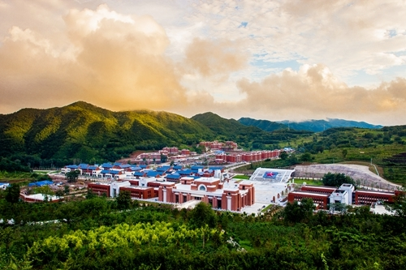

陕西文化
简介：陕西在上古时代是华夏"九州"中的"雍州"和"梁州"，历史悠久，早在110万年前，
"蓝田猿人"就在灞河两岸生息繁衍;西安城东的半坡遗址，展示着六七千年前母系氏族社会的进步和文明……无不标志着陕西古代文明的灿烂与辉煌。

目录：
一·历史摘要
二·文化发祥
三·革命圣地
四·经济文化
历史摘要:
陕西历史源远流长，民族文化闻名遐迩。这里是中国古人类和中华民族文化重要的发祥地之一，是中国历史上多个朝代政治、经济、文化的中心，是中华民族历史文明最早走向世界的地
方，也是现代中国革命的圣地，为炎黄子孙的生存、繁衍和人类历史文明做出了独特的贡献。
文化发祥：
陕西是中华民族光辉灿烂的古代文明发祥地之一。大约在80万年前，蓝田猿人就生活在这块土地上，开始制造和使用一些原始的工具，采集果实和狩猎鸟兽。1963年发现的“蓝田猿人”，是全国发现的时间最早、最为完整的猿人头盖骨化石。约三四万年前，关中地区的原始人类逐步进入氏族公社时期。1953年发现的西安半坡村遗址，就是六七千年前母系氏族公社的一座定居村落。
农业发祥，陕西是我国农业生产开发最早的地区之一。大约在6000年前，半坡人就在这里从事农业生产，饲养家畜，打猎捕捞，采集果实。当时种植的谷物主要是粟。传说中最早从事耕种稷和麦的人，是陕西关中周人的祖先。到了西周末年，关中地区的农业生产有了新的发展，并向其他地区传播。
对外开放发祥，陕西是我国对外开放最早的地区之一。大约在3000多年前，陕西长安就同许多国家有政治和经济等方面的交往活动。著名的“丝绸之路”就是以古长安为起点的。从两汉时期时，就以长安为中心，同南亚、西亚、欧洲各国进行政治、经济、文化交流。
文化发祥，陕西是远古文化的摇篮之一。陕西从西周起，就进入了一个新的历史发展时期。周是陕西关中一个古老的部族。周人以周原为活动中心后，就有了文字记事，把卜辞和占卜有关的记事文字刻在骨片上，后来又在青铜器上铸刻铭文。周代的古阴阳历，就是我国最早的历法。秦阿房宫、秦始皇陵、汉阳陵、乾陵等都记录印证了博大精深的陕西古代文化，其中已开发的秦始皇兵马俑坑，就展现了一个巨大地下雕塑艺术宝库，反映出当时高超的艺术水平，是我国文化史上的一个光辉篇章。
自古帝王都，陕西是我国历史上建都朝代最多和时代最长的省份。大约在2000年前、公元前28世纪左右，传说夏部落的始祖黄帝、炎帝都曾在陕西活动过，为中华民族的创立和发展作出了丰功伟绩。公元前21～前16世纪的夏朝时期，陕西就有扈国、骆国出现。公元前11世纪，周武王灭商，在陕西建都。此后，又有秦、西汉、东汉、西晋、前赵、前秦、后秦、西魏、北周、隋、唐、大夏等13个王朝先后在陕西建都，时间长达1100多年。此外，还有刘玄、赤眉、黄巢、李自成4次农民起义在此建立政权计11年。陕西为中华民族创造了光辉的历史文明，留下了丰富的宝贵文物。
革命圣地：
1935年10月19日，红军长征到达陕北吴起镇。从此，中共中央在陕北战斗、生活了13个春秋。延安成为中国革命圣地，中国共产党在这里领导了全国的抗日战争和解放战争。新中国成立后，特别是党的十一届三中全会以来，陕西发生了翻天覆地的变化，经济与社会发展欣欣向荣，取得了举世瞩目的辉煌成就。3600万勤劳、勇敢、智慧的三秦儿女，继承和发扬延安精神，正在乘改革开放的东风，在以江泽民为核心的党中央领导下，以昂扬的斗志，投身西部大开发，发扬光荣传统，重振汉唐雄风，再铸新世纪的历史辉煌。
【陕秦三秦】陕西简称陕或秦。“陕”指陕陌，在今河南省陕县西南。西周初期，周、召二公分陕而治，陕以东，周公治之，陕以西，召公治之。此后，人们就把陕陌以西称为陕西，简称“陕”。“秦”源于春秋战国时期，秦国的辖区主要在这一带。人们又称陕西为“三秦”，一般是从陕西的地理特征分为关中、陕北、陕南三个自然区域来理解的。其实，“三秦”得名源于项羽分封诸侯，让秦的三个降将分治秦之故地：章邯为雍王，领有咸阳以西；司马欣为塞王，领有咸阳以东；董翳为翟王，领有陕陌以西。“三秦”即由此得名。
唐以前行政区划演变，陕西地方行政区划，始于春秋战国时期。战国时，魏国在洛河下游设上郡，楚国在汉江中游设汉中郡，秦在陕北也设上郡。秦始皇统一六国后，普遍推行郡县制，分天下为36郡。陕西境内除保留上郡和汉中郡外，在渭河流域另设内史，与郡同级。
西汉沿袭秦制，保留上郡与汉中郡，另将秦的内史分为3个相当郡的政区：京兆尹(分管今西安以东、渭河以南地区)、左冯翊(分管渭河以北、洛河中下游地区)、右扶风(分管咸阳以西地区)，称为“三辅”，治所均在长安城。汉武帝时，为了加强中央集权，设13州刺史部，监察各郡。后来改刺史部为州，州牧或州刺史为行政长官，形成州、郡、县三级制。现今的陕西在西汉中期涉及3个州。
三国时期，现今陕西地区的大部分由雍州、荆州、益州管辖。西晋时大致和三国相仿。东晋至隋统一的二百多年间，南北分裂，战争频繁，行政区划十分混乱。
【唐以后行政区划演变】唐初对州、郡、县加以改革，全国共设10道，道辖州、郡。今关中、陕北属关内道，陕南属山南道。宋改道为路，今陕西的大部分属于永兴军路，治所在今西安市；今麟游、周至以西，南至凤县、留坝，另属秦凤路，治所在今甘肃天水市。这两路是由宋初的陕西路划分出来的，因此，习惯仍称它们为陕西路。今佛坪、镇巴以西属利州路，治所在今汉中市。今宁陕、石泉以东属京西南路，治所在今湖北襄樊市。今神木、府谷、佳县属河东路，治所在今山西太原市。金仍用路制，完全设在陕西境内的有京兆府路、延路。
元代的政治中枢称中书省，在各地的分设机构称行中书省，简称行省。陕西行省的辖地包括今陕西全境及甘肃兰州以东和内蒙古伊克昭盟中部以南各地。明在元行省基础上，除北京、南京外，在全国设13个布政使司，陕西布政使司所辖地区包括今陕西全境、甘肃嘉峪关以东各地、宁夏和内蒙古伊克昭盟的大部、青海湖以东部分。清代废去布政使司的称号，仍称行省或省，嘉庆年间全国有18个省。清初陕西仍辖今甘肃、宁夏和青海东部。康熙二年(1663)年移陕西右布政使驻巩昌，五年改为甘肃布政使，移驻兰州。从此，陕、甘两省分治。
自元代设行省起，陕西的省治一直设在现今的西安市。
经济文化：
陕西是一个欠发达的内陆省份，但又具有巨大的发展潜力和后发优势。地处中国腹地，
具有承东启西、联结南北的区位之便，既可以成为生产要素由东向西转移的首选承接地，又可以成为生产要素向大西北乃至整个西部地区转移的起点。雄厚的科技实力，可以对西部地区经济结构优化升级发挥重要的辐射和带动作用。富集的矿产资源与东部经济发展有较强的互补作用，可以成为全国能源和部分原材料工业的重要接续地。陕西省是黄河、长江上中游重要的生态屏障，是西部生态环境建设的一个主战场。西安作为西北地区最大的中心城市，可以在西部大开发中发挥多种服务功能。陕西省有条件并将努力成为西部大开发“桥头堡”和“第一阶梯”。
陕西在全国的地理位置居中，被称为“中国的西部，西部的东部”，中国的大地原点就在陕西泾阳县。中国铁路大动脉陇海线横穿中部，是“新亚欧大陆桥”亚洲段的中心和进入中国大西北的“门户”，包括铁路、西渝铁路贯穿西北，连通中国西北、华中和西南，具有承东启西、联结南北的区位之便。省会西安是重要的交通枢纽，战略地位非常重要。
陕西自然资源富集，全省矿产资源潜在经济价值超过41万亿元，居全国之首。煤炭探明储量1643亿吨，石油探明储量10亿吨，天然气预测储量6---8万亿立方米、探明储量4800多亿立方米。神府煤田是世界上少有的低磷、低硫、低灰、高热量的优质环保动力煤田。陕北有条件成为我国本世纪现代化建设重要的能源接续地。
陕西地形南北狭长，横跨温带、暖温带、北亚热带三个气候带以及黄河、长江两大水系。复杂多样的地形，差异明显的气候，形成繁多的生物资源，生物多样性十分突出。特别是陕南秦巴山区处于南北气候交汇带，生物资源种类繁多，中药资源十分丰富，被誉为中国植物资源的天然宝库。陕西还是中部和东重要的生态屏障，陕西的生态环境建设和保护，对缓解黄河水土流失、首都北京的风沙灾害，保障南水北调水质安全，都起着极为重要的作用。
陕西科教优势明显，科教综合实力位居全国前列，是全国航空、航天、机械、电子、农业等领域重要的科研和生产基地，也是全国高等教育的重要基地。全省有专业技术人员107.9万人，其中两院院士43人；有各类科研院所1061个。有普通高等院校52所，民办高校57所。以西安、宝鸡高新技术产业开发区和杨凌农业高新技术产业示范区为骨干的关中高新技术产业开发带已经形成。其中西安高新区是中国首批向亚太经合组织开放的科技工业园区，杨凌示范区是国家唯一的农业高新技术产业示范区，均跻身于国家重要支持的五大高新区之列。
陕西是中华民族文明和华夏文化的重要发祥地。曾长期是中国的政治、经济、文化中心，从西周到唐朝有14个王朝在这里建都，长达1100多年，留下了大量的文物古迹。陕西是中国革命的“摇篮”，中国共产党和毛泽东主席在陕北领导中国革命历时13个春秋，革命圣地延安保存着一批革命旧址。悠久的历史，灿烂的文化，使陕西旅游资源得天独厚。境内地上地下文物遗存极为丰富，文物点密度之大，数量之多，等级之高，均居中国之首。世界八大奇迹之一的秦兵马俑、唯一珍藏佛祖指骨舍利的法门寺、西安古城墙等驰名中外。陕北黄土高原、陕南山水风情令人神往，西岳华山、壶口瀑布、秦岭国家级生态功能保护区自然景观独具特色。
新中国成立初期，中国政府把陕西作为建设重点，进行了大规模投入。“一五”、“二五”和“三线”建设时期，国家在陕西摆了一批骨干项目，已形成以机械、航空航天、纺织、电子、医药、能源、食品为主体，门类比较齐全的工业体系，军工企业规模居全国第一。